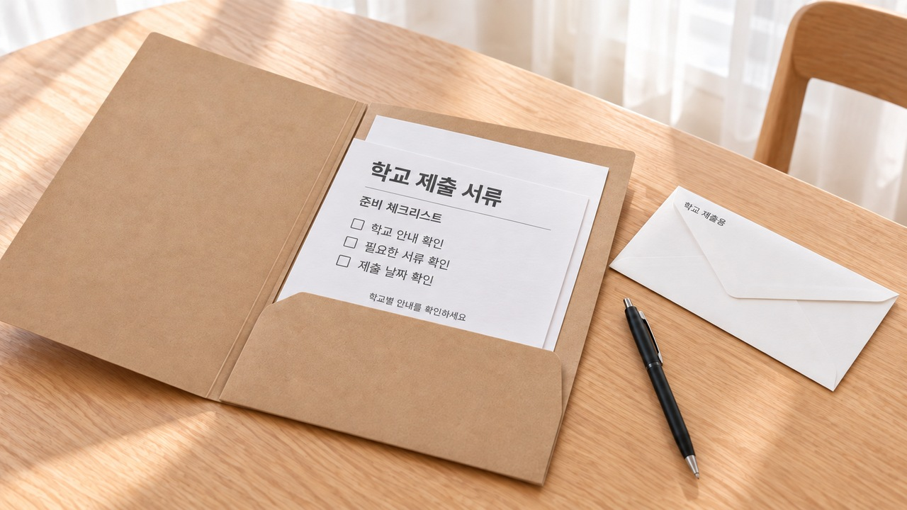
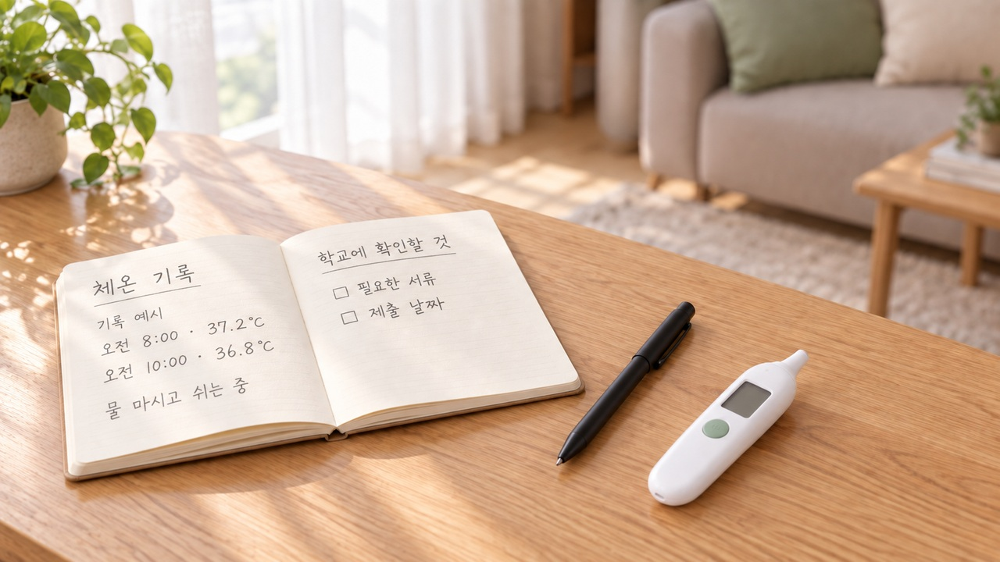

아이 이마를 짚었는데 불덩이처럼 뜨거워 깜짝 놀라 이비인후과로 달려간 뒤, 문득 "학교에 독감 등교 출석 인정 서류는 대체 무엇을 내야 하나?" 당황하게 됩니다.
비싼 서류를 떼어야 하는지 고민되실 텐데요. 결론부터 말씀드리면, 학교마다 인정하는 서류 종류가 다르므로 담임선생님께 먼저 여쭈어보는 것이 불필요한 비용과 헛걸음을 막는 지름길입니다.
| "선생님, 서류 뭐 내야 하나요?" 담임선생님께 확인할 3가지와 문자 예시

아이 결석 연락을 드릴 때는 아래 3가지를 미리 체크해 두시면 혼선이 없습니다.
첫째, 학교에서 인정하는 서류의 종류(진료확인서로 충분한지, 처방전도 가능한지)입니다.
둘째, 서류에 반드시 들어가야 할 필수 기재 항목(상병코드, 쉬어야 하는 요양 기간)입니다.
셋째, 서류를 학교에 제출하는 제출 기한(등교 첫날 결석계와 함께 제출하는지)입니다.
| 접수 창구에서 서류 뗄 때 "이것만 꼭 적어주세요" 요청하는 법


교육 지침을 살펴보면 학부모의 발급 부담을 덜어주기 위해 일상적인 증빙 서류도 폭넓게 인정하고 있습니다.
발급 비용이 부담스러운 공적 증명서 대신 원무과에서 진료확인서나 소견 확인 서류를 요청하시면 됩니다.

서류를 받으실 때는 자녀 이름과 상병명, 그리고 며칠 동안 쉬어야 하는지 요양 기간이 빠짐없이 적혀 있는지 눈여겨보시면 좋습니다.
발급처에 따라 약간의 발급 비용이 생길 수 있으니 접수창구에서 미리 물어보시면 번거로움을 덜 수 있습니다.
학교마다 인정 기준에 차이가 있으므로, 상병코드가 적힌 처방전으로 갈음할 수 있는지 확인해 두시면 한결 든든합니다.
| 이제 학교 가도 될까? 등교 전 체온 확인과 첫날 서류 챙기는 법
서류를 준비해 두셨다면 이제 등교 시점을 판단할 차례입니다.
학교 현장에서는 통상 증상 시작 후 5일 정도의 충분한 요양을 권해 드리는데요.
여기에 더해 복귀를 결정짓는 핵심 기준은 바로 해열제 없이 24시간 동안 정상 체온을 지키는 것입니다.

해열제를 먹이셨을 때는 마지막으로 복용한 순간부터 48시간 동안 추가 발열이 생기지 않는지 찬찬히 살펴주셔야 합니다.
몸속에 전파력이 남아 있는 상태로 서둘러 교실에 가면 다른 친구들에게 옮기기 쉬우므로 차분한 돌봄이 우선입니다.
다 나아가는 아이를 이끌고 대기실에 또 찾아가면 다른 호흡기 바이러스에 다시 노출될까 염려스럽기도 하지요.
많은 학교에서 서류 부담을 덜어주려 하지만, 등교 시 추가 확인서 필요 여부는 학교별 규정에 따라 다르므로 담임선생님께 확인해 보시는 편이 좋습니다.

2. 학교 홈페이지나 알리미 앱에서 내려받은 결석계 서식에 첫날 받아둔 확인서(또는 상병코드 기재 처방전) 1부를 덧붙여 주세요.
3. 아이 첫 등교 날 담임선생님께 가방에 넣어 보내시면 학교장 승인을 거쳐 '출석 인정'으로 단정하게 마무리됩니다.

서류 준비부터 차근차근 챙겨두시면 진료실에 두 번 걸음하는 일 없이 아이 돌봄에만 푹 집중하실 수 있습니다.
댓글로 소중한 경험과 궁금한 점을 편하게 남겨주세요! 🍯
환절기 백신 접종을 앞두고 계신다면, 당일 무리 없는 컨디션 점검 수칙도 함께 살펴보세요!
- 보건당국 국가건강정보포털: 인플루엔자 감염 관리 및 격리 기준 지침
- 교육부: 학생 감염병 관리 대응 매뉴얼
- 교육부 학교생활기록부 기재요령: 감염병 등교 중지 출석 인정 결석 서류 규정
- 학교보건법 제8조 및 동법 시행령: 등교 중지 조치 및 인정 기준